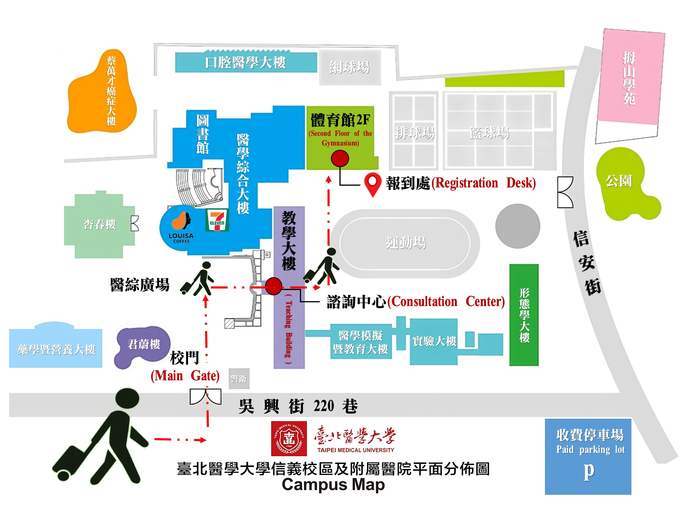

參與志工請務必遵守以下規定：
活動時間
2026年7月4日(星期六)至7月31日(星期五)
海外志工航班及生活調查事項表
請於5月10日(星期日)前完成填寫表單，並上傳機票影本或購票證明、健康證明表、醫療保險證明影印本(可申請海外就醫給付之醫療保險)、肖像授權同意書及錄取志工行前通知注意事項各1份(須經申請人與家長簽章)
接機報到
接機地點：桃園國際機場第一航廈入境大廳與第二航廈入境大廳
接機(臺灣)時間：7月4日(星期六) 09:00-17:00。
聯絡人：嚕啦啦旅行社 陳秀春 小姐(手機：0937-071035)
欲至機場報到者，請於調查表內提供已確認之抵臺班機時刻，由承辦單位(嚕啦啦旅行社)派車接送；將視志工航班抵達情形安排接駁車班，非隨到隨接駁。
接機人員將持明顯手舉牌利於辨識
如有其他需求請事前告知，以利承辦單位聯絡安排。
自行報到

報到地點：臺北醫學大學(信義校區) 臺北市信義區吳興街250號
報到時間：7月4日(星期六) 14:00-18:00
聯絡人：嚕啦啦旅行社 陳林淳 先生 / 手機：0935-261165
親友自行接送至臺北醫學大學(信義校區)者，請攜個人必須物品及行李於上述報到時間內前往報到。報到時請出示護照等文件，報到後以團體活動為主，請勿自行離團活動。
攜帶物品
- 護照
- 個人盥洗用品、浴巾、慣用藥品、換洗衣物
- 個人運動服裝及球鞋
- 其他個人需用物品(筆電、零用錢、雨傘、手機、充電器等)
- 生活公約說明會將於抵臺後舉辦
教育訓練週採分組設計教案，且各服務學校教案採紙本、道具或電子化不一，請自行評估是否需攜帶筆電。